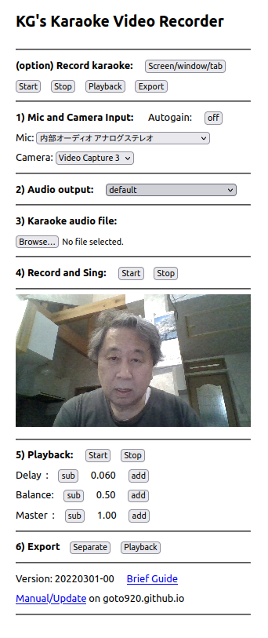

|

|
- (option) Only if you do not have a karaoke audio file.
Record what you play on the device.
- "Screen/window/tab": Select region to capture (pop up)
- "Start": Start recording, then play some music on the device
- "Stop": Stop recording or playback
- "Playback": (optional) Playback recorded audio to check if it is good.
- "Export": Export recorded audio for download
- 1) Select Inputs
- "Mic": select audio input (built-in or external)
- "Camera": select video input (built-in or external)
- 2) Select audio output device (built-in or external)
- 3) Select a file in local storage or cloud drives
- 4) Record your performance
- "Start"
- sing along with karaoke
- "Stop"
- Go to 6) "Separate" for mixing with a video editor.
- Go to 5) for mixing with this app.
- 5) Playback the mix of recorded video/vocal and karaoke audio.
Delay is added to the karaoke track,
because the video track has 20 to 100 milliseconds latency.
- "Start": the mix is automatically recorded in background.
Try a several times to adjust delay and balance.
- "Delay": adjust delay
- "Balance": Add if vocal is too quiet and Sub if vocal is too loud.
- "Master": Adjust master gain. Use device volume too.
- "Stop": Stop playback and recording.
- 6) Export for download
- "Separate": Exports video (vocal only) and karaoke audio separately.
Mix two tracks on a video editor.
Click after Start, Stop in "4) Record and Sing."
- "Playback": Exports a video (mixed audio).
Click after Start, Stop in "5) Playback."
|